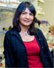
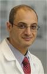
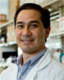

= APSA sponsored event
Thursday, April 20th
| Time | Event |
|---|---|
| 7:00 – 10:30 pm |
Social Event with the Central Society for Clinical and Translational Research Location: Beacon Tavern |
Friday, April 21st
| Time | Event |
|---|---|
| 8:30 am – 11:00 am |
APSA Business Meeting Location: Rouge |
| 11:00 am – 1:00 pm |
APSA Session I Location: International Ballroom |
| 11:00 am – 11:45 pm |
Translating Neuroscience: Obstacles and Opportunities APSA Keynote Speaker: Kafui Dzirasa, MD, PhD, Duke Institute for Brain Sciences Location: International Ballroom |
| 12:00 pm – 12:45 pm |
The Role of the Physician Scientist in Interventional Radiology APSA Keynote Speaker: Sanjay Misra, MD, Mayo Clinic Sponsored by the Radiological Society of North America Location: International Ballroom |
| 1:00 pm – 3:00 pm |
Poster Setup Location: Imperial Ballroom |
| 1:00 pm – 3:30 pm |
AAP/ASCI/APSA Plenary Session I: Healthy Brain, Healthy Living Session Moderators: Alex Adami, Vivian Cheung, and Serpil Erzurum Location: International Ballroom |
| 1:00 pm – 1:30 pm |
Population-Based Strategies for Promotion of Cognitive Resilience ASCI/AAP Keynote Speaker: Kristine Yaffe, MD, University of California, San Francisco Location: International Ballroom |
| 1:30 pm – 2:00 pm |
The White House BRAIN Initiative: Revolutionizing Brain Health through Innovative Technologies ASCI/AAP Keynote Speaker: Sarah H. Lisanby, MD, National Institutes of Health, National Institutes of Mental Health Location: International Ballroom |
| 2:00 pm – 3:00 pm |
ASCI and AAP New Member Presentations NETting the Web in Systemic Autoimmunity AAP New Member: Mariana Kaplan, MD, NIH, National Institute of Arthritis and Musculoskeletal and Skin Diseases Time: 2:00 pm – 2:15 pm Genetic Approaches to Understanding the Pathogenesis of 15q13.3 Microdeletion Syndrome ASCI New Member: Christian P. Schaaf, MD, PhD, Baylor College of Medicine Time: 2:15 pm – 2:30 pm FGF23: From Mendelian Obscurity to Mainstream Mechanism of Cardio-Renal Disease AAP New Member: Myles Wolf, MD, MMSc, Duke University Time: 2:30 pm – 2:45 pm Immune Responses in Gastrointestinal Tissues ASCI New Member: Aida Habtezion, MD, MSc, Stanford University Time: 2:45 pm – 3:00 pm Location: International Ballroom |
| 3:00 pm – 3:30 pm |
-- Break -- Location: International Foyer |
| 3:30 pm – 6:00 pm |
AAP/ASCI/APSA Plenary Session I (Moderator Change): Healthy Brain, Healthy Living Session Moderators: Benjamin Ebert, Linda P. Fried, Jilllian Liu Location: International Ballroom |
| 3:30 pm – 4:00 pm |
ASCI/Stanley J. Korsmeyer Award Lecture Recipient: James E. Crowe, Jr., MD, Vanderbilt University Location: International Ballroom |
| 4:00 pm – 4:30 pm |

The Biology of Memory and Age Related Memory Loss APSA Keynote Speaker: Eric Kandel, MD, The Kavli Institute for Brain Science Location: International Ballroom |
| 4:30 pm – 5:00 pm |
ASCI Presidential Address Vivian Cheung, MD, Howard Hughes Medical Institute, University of Michigan Location: International Ballroom |
| 5:00 pm – 5:30 pm |
ASCI/Harrington Prize for Innovation in Medicine Lecture
Daniel J. Drucker, MD, Lunenfeld-Tanenbaum Research Institute of the Mount Sinai Hospital Joel F. Habener, MD, Massachusetts General Hospital, Harvard Medical School Jens J. Holst, MD, DMSc, University of Copenhagen Location: International Ballroom |
| 5:30 pm – 6:00 pm |
Drugs, Neurotransmitters and the Brain Location: International Ballroom |
| 6:00 pm – 7:00 pm |
APSA Local Chapter and Institutional Representative Meeting Location: State Room |
| 6:15 pm – 7:15 pm |
ASCI President’s Reception (invitation only) Location: Gold Room |
| 6:15 pm – 9:30 pm |
Poster Viewing Only Location: Imperial Ballroom |
| 7:00 pm – 9:00 pm |
AAP Offsite President’s Dinner (by invitation only) |
| 7:30 pm – 9:45 pm |

How to Earn a Nobel Prize ASCI Annual Dinner/Introduction of New Members Speaker: Michael S. Brown, MD, University of Texas Southwestern Medical Center (ticketed event) Location: Rouge |
| 9:00 pm – 12:00 am |
APSA Welcome Reception (ticketed event requiring ID) Location: Mid-America Club, Aon, 200 East Randolph Drive, 80th Floor, Chicago, IL 60601 |

Saturday, April 22nd
| Time | Event |
|---|---|
| 7:00 am – 8:00 am |
Mentoring Breakfast (ticketed event) ASCI and AAP members join APSA members for breakfast, sharing their career advice and answering trainee questions in an informal setting. Location: Rouge |
| 7:00 am – 8:00 am |
AAP Council Meeting Location: State Room, 2nd Level |
| 8:00 am – 9:00 am |
Poster session (Odd-numbered) and continental breakfast Location: Imperial Ballroom |
| 9:00 am – 11:45 am |
AAP/ASCI/APSA Plenary Session II: Visualizing Medicine Session Moderators: Vivian Cheung, Mariam Bonyadi Camacho, and Christine Seidman Location: International Ballroom |
| 9:00 am – 9:30 am |
Charting Our Future Together: Turning Discovery into Health ASCI/AAP Keynote Speaker: Gary Gibbons, MD, NHLBI, NIH Location: International Ballroom |
| 9:30 am – 10:00 am |
Visualizing GPCR – Transducer Complexes Elucidates Evolving Signaling Paradigms ASCI/AAP Keynote Speaker: Robert Lefkowitz, MD, Duke University Location: International Ballroom |
| 10:00 am – 10:15 am |
Oral Abstract Presentation: Loss of Function Mutations in GALNT14 predispose to IgA Nephropathy Location: International Ballroom |
| 10:15 am – 10:45 am |

Circadian Regulation of Physiology ASCI/AAP Keynote Speaker: Amita Sehgal, PhD, Perelman School of Medicine at the University of Pennsylvania Location: International Ballroom |
| 10:45 am – 11:15 am |

Pathways Regulating Stem Cell Self Renewal and Migration APSA Keynote Speaker: Leonard Zon, MD, Harvard University Location: International Ballroom |
| 11:15 am – 11:45 am |

|
| 11:45 am – 1:30 pm |
Poster Session (Even-numbered) with Lunch Location: Imperial Ballroom |
| 12:45 pm – 1:30 pm |
Poster Review Meeting Location: Royal Room, Level B2 |
| 1:30 pm – 2:00 pm |
Poster Dismantle Location: Imperial Ballroom |
| 1:30 pm – 3:00 pm |
AAP/ASCI/APSA Plenary Session III: Areas Requiring Urgent Responses Moderators: John Carethers, Hanna Erickson, and W. Kimryn Ramthell Location: International Ballroom |
| 1:30 pm – 2:00 pm |

Vaccine development for Zika virus ASCI/AAP Keynote Speaker: Dan H. Barouch, MD, PhD, Beth Israel Deaconess Medical Center, Harvard University Location: International Ballroom |
| 2:00 pm – 4:30 pm |
Research Pathway Directors Meeting Location: State Room |
| 2:00 pm – 2:15 pm |
Oral Abstract Presentation: Modification of LPS by EptB Inhibits Intelectin Binding and Increases Systemic Inflammation During Salmonella Infection Location: International Ballroom |
| 2:15 pm – 2:45 pm |
Microbial diagnostics, surveillance and discovery in acute and chronic diseases ASCI/AAP Keynote Speaker: W. Ian Lipkin, MD, Columbia University Location: International Ballroom |
| 2:45 pm – 3:00 pm |
Best Poster Awards Location: International Ballroom |
| 3:00 pm – 3:30 pm |
-- Break -- Location: International Foyer |
| 3:30 pm – 4:00 pm |

Preparing for the next pandemic ASCI/AAP Keynote Speaker: Tachi Yamada, MD, KBE, Frazier Healthcare Partners Location: International Ballroom |
| 3:30 pm – 5:45 pm |
AAP/ASCI/APSA Plenary Session III (Moderator Change): Areas Requiring Urgent Responses Moderators: Hossein Ardehali, Brandon Fox, and Linda P. Fried Location: International Ballroom |
| 4:00 pm – 4:30 pm |

Global Health Security: Urgent Protection Imperatives APSA Keynote Speaker: Julie Gerberding, MD, MPH, Merck Sponsored by the Infectious Diseases Society of America Location: International Ballroom |
| 4:30 pm – 5:00 pm |

AAP Presidential Address Linda P. Fried, MD, MPH, Columbia University, Mailman School of Public Health Location: International Ballroom |
| 5:00 pm – 5:45 pm |
Kober Medal Presentation Recipient: Laurie Glimcher, MD, Dana-Farber Cancer Institute Presenter: Carl Nathan, MD, Weill Medical College of Cornell University Location: International Ballroom |
| 6:00 pm – 7:00 pm |
APSA Panel: Team Based Science Location: Crystal Room The past several decades have witnessed a dramatic increase in the scale and complexity of scientific and translational research. As the complexity of today’s most pressing health issues and diseases is revealed, collaborations among scientists trained in different fields, from bioinformatics to molecular genetics to biomedical policy, have become essential for exploring and advancing biomedical research discoveries. Given their dual training in medicine and scientific research, physician-scientists are poised to lead team science and the multidisciplinary research initiatives. Our session aims to answer: What constitutes successful team science? What are examples physician-scientists have used in their research endeavors to promote team science productivity? Why do some research teams succeed while others do not? What factors maximize a research team’s productivity or effectiveness? What detracts from team science success? |
| 6:00 pm – 8:00 pm |
ASCI Reception for New Members and and Young Physician-Scientists (invitation only) Location: Gold Room |
| 7:00 pm – 10:00 pm |
Can science avert the decline and fall of the American empire? AAP Banquet and Speaker: Roberta B. Ness, MD, MPH, The University of Texas School of Public Health Location: Imperial Ballroom |
| 7:30 pm – 9:00 pm |
APSA Dinner and Founder's Award Presentation (ticketed event) Charting Your Path as a Physician Scientist Speaker: Kirsten Bibbins-Domingo, MD, PhD, University of California San Francisco Founder's Award Recipient: Joseph Bast, PhD, Founding Director, APSA Board of Directors Location: Rouge Note: Open to attend previous events speaker afterwards |
| 10:00 pm – 12:00 am |
Dessert Reception (open to all attendees) An opportunity for APSA members to converse with and learn from senior physician-scientist members of the AAP. Location: Imperial Lobby |
Sunday, April 23rd
| Time | Event |
|---|---|
| 8:00 am – 12:00 pm |
APSA Session II Location: International Ballroom |
| 8:00 am – 9:30 am |
Mentoring Breakfast - Medical Specialties (ticketed event) Location: International Ballroom |
9:00 am – 10:00 am |
Society Leadership Wrap Up Meeting Location: Embassy Room |
| 9:30 am – 10:00 am |
Genetic Influences on Rheumatoid Arthritis APSA Keynote Speaker: S. Louis Bridges, Jr., MD, PhD, UAB Location: Gold Room |
| 10:00 am – 11:00 am |
Location: Gold Room This panel will discuss how to balance work responsibilities and career building with aspects of social and family life in the context of a physician-scientist lifestyle. |
| 11:00 am – 12:00 pm |
APSA Panel: The Dos and Don'ts of MSTP Admissions Location: Embassy Room Come visit with the MSTP directors to learn about how you can become a competitive applicant. The application process can be daunting so this is a great opportunity to be able to ask your questions directly to those with the inside scoop. |
| 11:00 am – 12:00 pm |
Location: Gold Room Mirroring the shift from medical to graduate school, the return to- and finishing of- medical school prompts medical scientist trainees to address one glaring challenge: starting the next chapter of our professional lives. The purpose of this panel is to enlighten audience members on how to smoothly navigate the often-stressful and seemingly complicated process of transitioning from the later phase of the MD/PhD curriculum towards your own, personal career trajectory. Consisting of a 4th year medical student, PSTP residency director, and resident/fellow on the panel, the intention is to open the entire room up for discussion. Though the focus is on transitions, all topics are highly encouraged for debate, ranging from questions about the traditional academic sequence (e.g., residency, interviewing, match, fellowship, etc.) to the more provocative consideration of non-academic career paths. |
| 12:00 pm – 2:00 pm |
Location: Rouge Come get your questions answered by the experts about specific programs and the nature of physician-scientist training after medical and graduate school. If you are applying to residency soon, this is an unrivaled opportunity to directly connect with program directors. Find a list of all the programs here |
| 2:00 pm – 4:30 pm |
APSA Research Pathway Director’s Meeting Location: State Room |